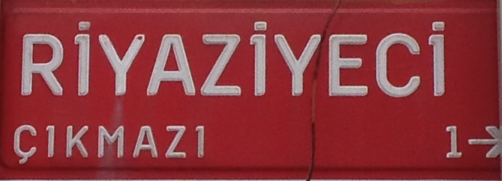

RİYAZİYECİ ÇIKMAZI
(MATHEMATICIAN'S IMPASSE)
If you are a mathematician visiting Istanbul, there is one place
with a very significant name: Mathematician's Impasse (or dead end).
Situated in a historical quarter, right next to the Anatolian castle
(Anadolu Hisarı) built on the ruins of a temple of Uranus by the Sultan Bayezid I. It
is the oldest Turkish surviving architectural structure built in
Istanbul. In front of the castle, there is a yali (greek γιαλή), a mansion built on the shores
of Bosphorus which is known as the Riyaziyeci
Izzet Bey yalisi. Riyaziye is the literal translation of the
word "mathematics" to arabic, and was used during the Ottoman
times. And -ci is a turkish suffix which makes it
"mathematician". It was constructed by Izzet bey in 1890 in
the art nouveau style. He was a mathematics teacher in the
Daruchchafaqa college, and he seem to have written some 93 books
though I have been unable to spot a single one of them. To my
knowledge he has no theorems and apparently it is not mathematics
which made his fortune.
The yali is close to visitors, however, There is a restaurant
nearby, where you may have a lunch after visiting the Anadolu
hisarı, walking a few minutes around the famous Göksu creek, and
taking a selfie in front of the street sign.
(see the map below)
Riyaziyeci İzzet Bey Yalısı; İstanbul Boğazı’nın Anadolu yakasında
Beykoz Anadoluhisarı kalesinin yanında olan yalı 1890 tarihlerinde
Riyaziyeci İzzet Bey tarafından yaptırılmıştır. Riyaziyeci İzzet Bey
1864 yılında Hattat Mustafa Nurettin Efendi’nin oğlu olarak doğdu.
Darüşşafaka Lisesini bitirip aynı okulda Matematik öğretmeni oldu.
Riyaziyeci İzzet Bey çok üretken bir bilim adamıydı. Hayatı boyunca
doksan üç kitap yazmıştır. Şirket-i Hayriye salnamesi ve Boğaziçi
Rehberi gibi kitaplar yazdı. Boğazın Göksu deresi ile birleştiği
noktada iki beyaz yalı bulunur. Bu yalılardan daha dereye yakın olan
bu yalıdır. Art nouveau modelindeki bu yüzyıllık bu yalının dış
cephelerinden bile iki ayrı bölüm olarak inşa edildiği ortaya çıkar.
Deniz cephesinde iki tane üçgen alınlıklı bölüm bulunur. Bu cumbalı
bölümler yapının her iki yanında da bulunur. Deniz tarafındaki iki
alınlık altları da iki katta da balkondur.Bu balkonların parapetleri
Art nouveau süslemeler bulunur. (TAS-Istanbul
sitesinden alınmıştır)
Riyaziyeci İzzet beyin hayatı ve eserleri hakkında malumatı olanlar
beni de bilgilendirirlerse minnettar kalırım. Ana
sayfaya dön